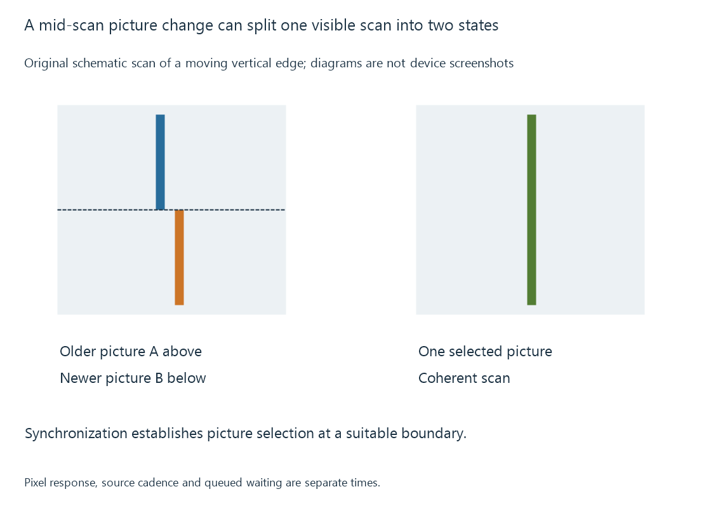

Vertical synchronization (VSync)
Vertical synchronization coordinates presentation with display refresh boundaries to avoid showing incompatible picture updates within a scan.
A display can scan a picture progressively. If the presented image changes partway through that scan, one part can come from an older picture and another from a newer picture.
A moving edge can then appear discontinuous at the boundary: a tear line. Vertical synchronization, or VSync, coordinates updates with the refresh schedule so the intended picture is presented coherently.
The scan and the update need a relationship
Imagine an original sixty-Hz scan beginning with picture A. Halfway down the screen, the output starts reading picture B, whose moving object has shifted.
The top rows contain A’s position; the bottom rows contain B’s. The mismatch belongs to presentation within the scan, not necessarily to corrupted decoding.

A synchronized arrangement selects or schedules the new picture at an appropriate refresh boundary. Its buffering and presentation rules determine the concrete handoff.
A ready picture can wait
For an original fixed sixty-Hz grid, let refresh boundaries occur at 0, 16.667, 33.333 and 50 ms. Assume each ready picture is selected at the next boundary, with no additional queue:
| Ready time | Selected boundary | Modeled wait |
|---|---|---|
| 10 ms | 16.667 ms | 6.667 ms |
| 17 ms | 33.333 ms | 16.333 ms |
| 34 ms | 50 ms | 16 ms |
A picture arriving just after a boundary can wait nearly an interval. Additional queued pictures or display processing can add time again.
This model explains boundary waiting; it is not a benchmark of VSync latency. Actual operating systems expose different queue and presentation arrangements.
Microsoft’s DXGI Present documentation, for example, gives synchronization-interval semantics for its presentation models. Their flags and queue behavior are part of that specific contract.
Coherent scanout does not guarantee smooth cadence
A perfectly coherent sequence can still hold film pictures for uneven durations. Twenty-four source pictures fitted to sixty fixed refreshes commonly need three/two interval repetition.
VSync prevents a particular scan/update mismatch. Frame-rate matching addresses the source-to-output timing ratio.
Similarly, if the next usable picture is late, the system can continue showing the previous one. That can produce a visible pause or repeat without a tear line. Decoder readiness, presentation deadlines and the chosen queue policy remain relevant.
For Emby playback, a regular uneven pan, a single missed deadline and a picture torn during scanout are different observations.
VRR has an API-specific presentation contract
A variable-refresh route can schedule an output update around picture readiness within its supported range. It still needs synchronization and valid picture selection.
Microsoft’s documented DXGI VRR route requires particular tearing-capability flags and sync-interval settings. The word “tearing” in that API permission is not, by itself, evidence that every presented picture will contain a visible tear.
The actual output mode, supported variable range and presentation behavior determine the result. VRR explains why those conditions matter.
See Also
- Variable refresh rate (VRR)
- Judder and uneven picture cadence
- Display refresh rate
- Dropped video frames during playback